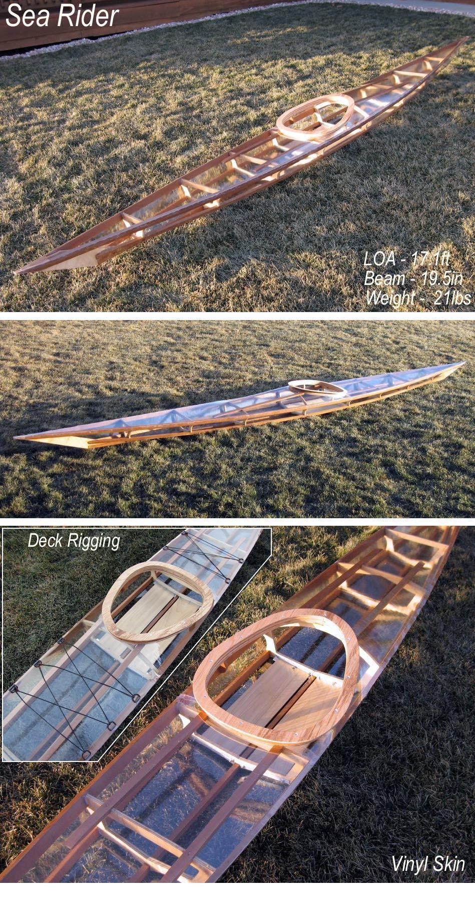

| Sea Rider ( Wood Frame / Clear Vinyl Skin) | Menu Previous Page Next Page |
|

This non-folding wood frame Sea Rider has a 20mil clear Vinyl Skin. Durability of this unsupported (no cloth core) material will be less than standard PVC ( Polyester core / Vinyl). More frame construction details can be seen on the next several pages. The Sea Rider Offsets are at the end of this section. Use the (BACK) key to return.Complete building instructions will be added soon. Any of the designs in the manual can be built using this non-traditional wood technique.
|
|